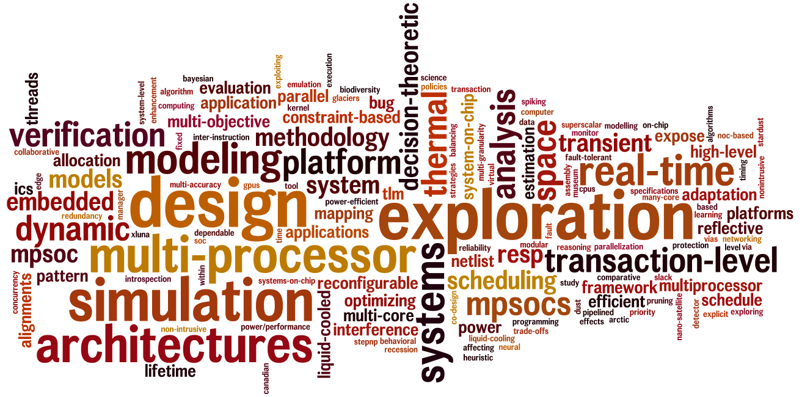

Giovanni Beltrame - Professor
Short biography
Giovanni Beltrame received the M.Sc. degree in electrical engineering and computer science from the University of Illinois, Chicago, in 2001, the Laurea degree in computer engineering from the Politecnico di Milano, Italy, in 2002, the M.S. degree in information technology from CEFRIEL, Milan, in 2002, and the Ph.D. degree in computer engineering from the Politecnico di Milano, in 2006. He worked as an engineer at the European Space Agency until 2010, and he is currently a Professor at École Polytechnique de Montréal, Canada, where he directs the MIST Laboratory.
Giovanni Beltrame has published more than 60 papers in international conferences and journals, he is in the organising committee of several international conferences, and he is principal investigator on multiple projects funded by government and industry.
Contact Information
École Polytechnique de Montréal
Department of Computer and Software Engineering
P.O. Box 6079, Downtown Station
Montreal, Quebec H3C 3A7
CANADA
P: (514) 340-4711 ext 2370
Tel. (514) 340 4711 ext 2370
Note to potential students
If you'd like to work with me on your research, please check out how to join MIST. I receive many requests daily, so please show that you have read the join page, or I won't answer your inquiries.
Research
My research in a nutshell

Here are some slides about my current projects.
Research interests
-
Intelligent Systems: Swarm robotics, distributed planning, collaboration, SLAM
-
Embedded Systems: Modelling, design, simulation, and verification of hardware and software
-
Aerospace: Avionics, fault-tolerant systems, radiation hardening of ASICs and FPGAs
-
Optimization: Multi-objective optimization algorithms, parallelization and parallel programming models
Publications
You can See my publications here
Teaching
INF6593ME: Swarm Intelligence
This course covers a wide range of topics in swarm intelligence, including mathematical, computational, and biological aspects.
- INF1600
- Architecture des micro-ordinateurs:
Composants d'un micro-ordinateur: microprocesseur, périphériques, mémoires et bus. Communication et synchronisation entre un microprocesseur et les autres composants: par scrutation et par interruption. Hiérarchie de mémoire: disque, mémoire vive, cache, registres. Boucle d'exécution sur un processeur simple. Représentation des instructions binaires et mnémoniques. Traduction d'expressions en assembleur. Adressage, alignement et représentation des données. Programmation en assembleur. Lien entre l'assembleur et un langage de haut niveau. Optimisation du microprocesseur: pipeline.
- AER8300
- Informatique des systèmes spatiaux
Défis de l'environnement spatial pour les systèmes embarqués. Effets des radiations sur les systèmes intégrés. Techniques de protection. Composants (processeurs, mémoires, bus et interfaces) pour les vaisseaux spatiaux, composants commerciaux et leurs défis. Capteurs et fusion des données. Formats de télémétrie et télécommande. Fiabilité du logiciel et matériel, techniques de détection et correction des erreurs. Conception de systèmes robustes. Analyse, dimensionnement et conception de systèmes de traitement de données pour missions spatiales.